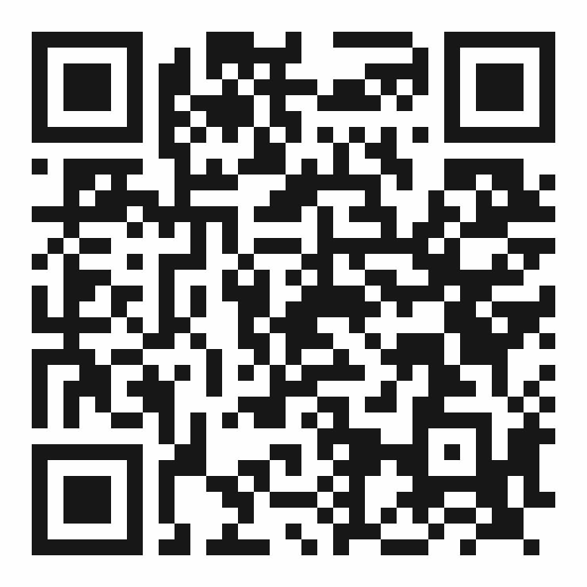

Ng Zi Jun
RFS Consultants Sdn Bhd
Scan to view digital business card, save contact & connect on WhatsApp.
makersco.github.io/makersco-digital-card/zijun
Scan with your phone camera to open the card
Powered by
Makers Co
· Digital Business Cards